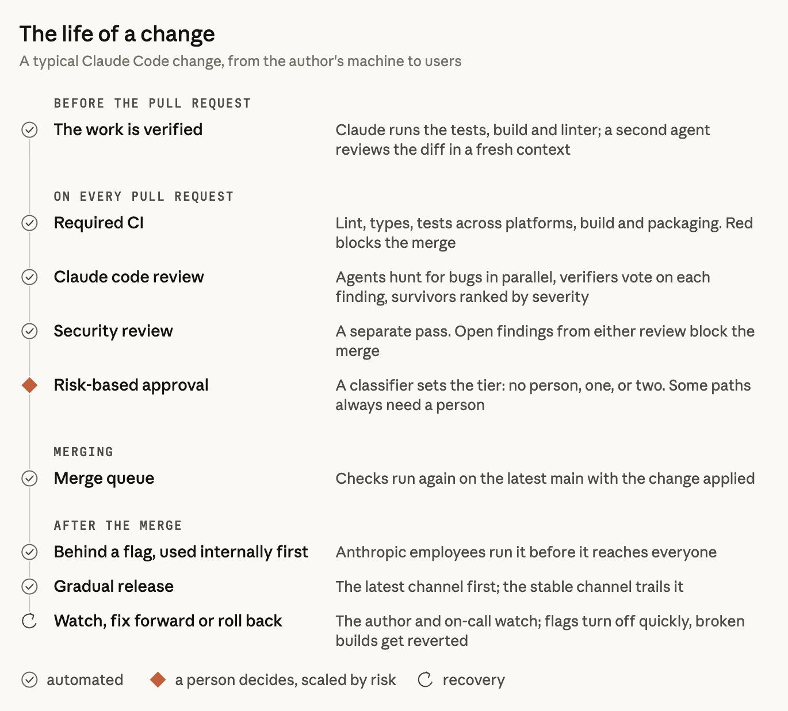
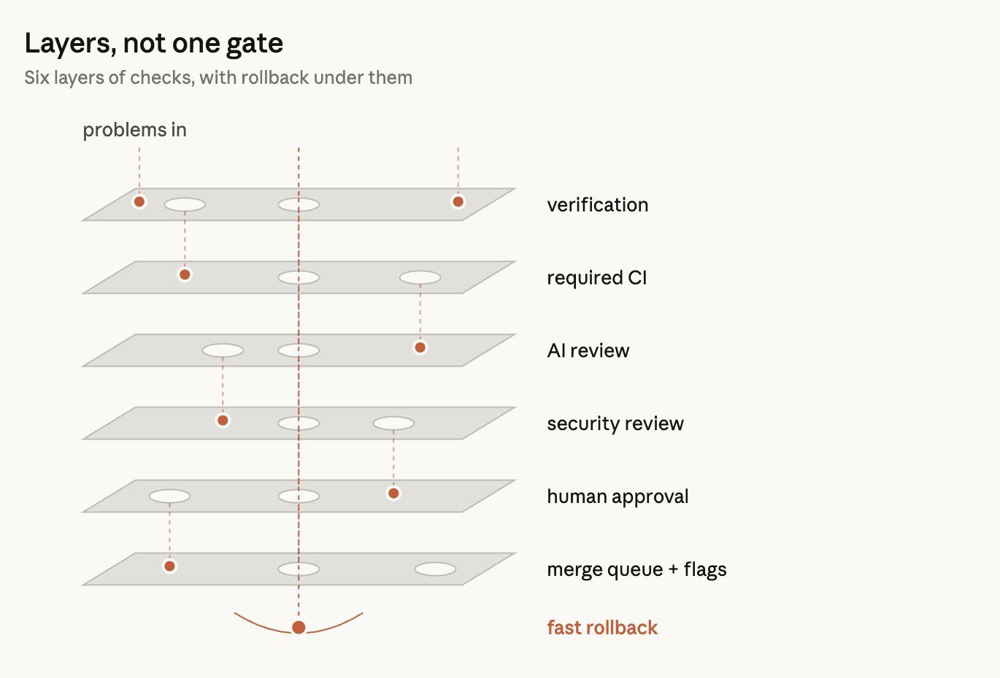
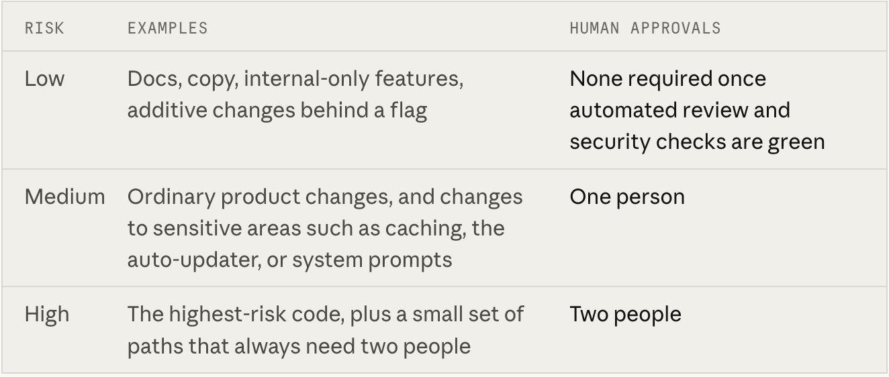
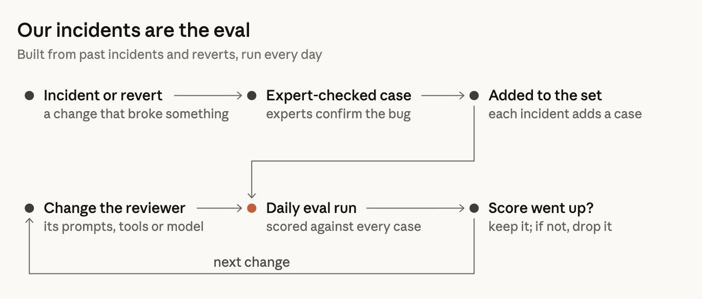
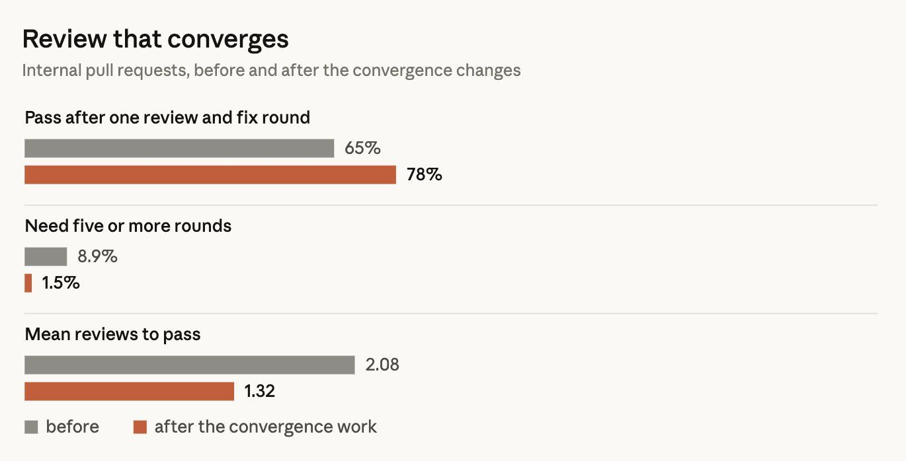
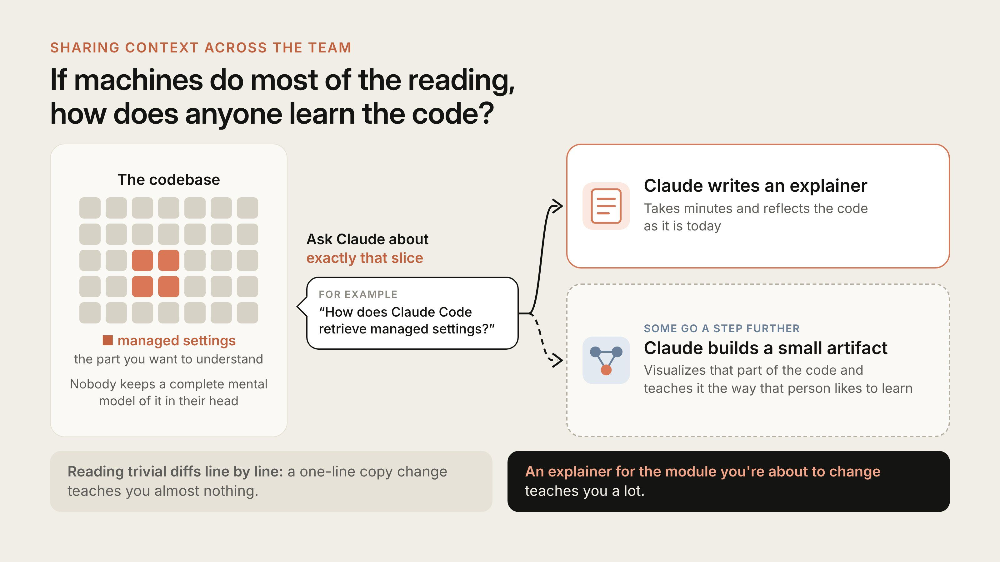

Addy Osmani · Claude Code 团队（Anthropic） · 2026-10-26
How the Claude Code team does code reviewClaude Code 团队怎么做代码审查
60 秒速览：这篇文章在说什么
译者所加，不是原文的一部分 —— 读完这 7 条，再看原文会快很多。
- 一句话结论：Claude 写了 Claude Code 约 90% 的代码，团队的应对不是「把 review 做得更快」，而是把「读代码」这件事的大部分交给机器，再把人的注意力按风险重新分配。
- 为什么非改不可：6 月到 9 月，合并进 Claude Code 的 PR 翻了一倍多，撤销比例反而降了 40% 以上。但人的时间是双向成本——省下审查时间、却没减少修 bug 的时间，等于没省。
- 流程长什么样：一次改动要过验证前置 → 每个 PR 的 AI 审查 → 能阻断合并的安全审查 → CI → 按风险分级的人审 → 合并队列加功能开关 → 快速回滚兜底。正文说「六层」，编号却到第 7 项——第 7 项就是回滚。
- 审查者怎么变好：把历史事故做成评测集天天跑；用「人怎么处理这条评论」衡量噪音；给审查过程加上轮次上限和「只看新增 diff」。
- 一条数字链：一晚循环 50+ 轮 → git blame 显示被反复指出的 59% 是老代码 → 收敛后平均轮次 2.08→1.32、需要 5 轮以上的从 8.9% 降到 1.5%、一轮就过的从 65% 升到 78%。
- 人还剩什么：决定该不该做、审危险代码、定架构、验证证据、对结果负责。
- 最大的观念转变：「有没有人读过代码」是个不精确的代理指标；真问题是「这个改动可能出什么问题，该由哪道检查来抓住它」。
常见做法：路尽头的一道闸门
- 代码写完了，PR 提上来，等人来读
- 质量保证 = 有人逐行读过
- 审查越仔细越好，默认多跑几轮
- 出了问题靠事后回滚，外加找人追责
- 度量看「review 做得多细」
本文做法：分层 + 会收敛的审查
- 大部分「读」发生在 PR 存在之前：验证前置 + 新上下文的子智能体审 diff
- 六层检查，一层漏了还有下一层，回滚是托底的底座
- 人的注意力按风险档位投放，批准只对那一次提交有效
- 度量看「每 PR 人工批准数 + 等人时长」，护栏是撤销率与事故率
- 目标不是零缺陷，而是「快发现、快纠正」，并让审查过程收敛
这张对比卡是译者按正文归纳的，不是原文的表格。原文更强调后者是同一目标下换了一套时序与度量，而不是「一个更严格、一个更宽松」。
读法建议：先看图 A（一次改动的旅程）和图 B（层，不是一道闸门）建立整体结构，再顺着 1–7 的编号读正文；第 4 节「How we make the reviewer better」和第 9 节「How to implement」是两处可以整段拿去用的部分。
这篇要回答的问题很具体：当 Claude 写了 90% 的代码，代码审查还剩下什么、该由谁做。作者给的不是口号，而是他们团队实际在跑的流程和一组前后对比数字。
We previously mentioned that Claude writes about 90 percent of the code for Claude Code. So how do we do code review at this scale? Who reads code anyway? What happens if code goes wrong?
我们此前提到过，Claude Code 的代码里约有 90% 是 Claude 自己写的。那么在这个体量上，我们怎么做代码审查？再说，究竟是谁在读代码？代码出了问题又会怎样？
This post describes our team's code review process at Claude Code and how we have improved it. Between June and September, we saw more than double the number of pull requests that were merged to the codebase for Claude Code, while the share of pull requests that had to be reverted fell by more than 40 percent.
本文讲的是我们团队在 Claude Code 上的代码审查流程，以及我们是怎么改进它的。从 6 月到 9 月，合并进 Claude Code 代码库的拉取请求数量翻了一倍多，而不得不撤销的拉取请求占比下降了 40% 以上。
We didn't stop doing code review. Instead, we've automated the majority of reading and tuned it to optimize for human time and effort. We've also made significant investments into improving the speed and ease of reverting mistakes.
我们并没有放弃代码审查。我们做的是把大部分「阅读」工作自动化，并围绕人的时间和精力去调优。我们还投入了大量精力，让撤销错误变得更快、更容易。
Rethinking the goal of code review重想代码审查的目的
审查的目的被重新定义了：不是问「有没有人读过」，而是问「这个改动可能出什么问题、该由哪道检查抓住」。同时它从「事后关卡」变成了「写的时候就顺手做」。
With agents writing code, the volume of changes increases rapidly. In our monorepo, we went from approximately 2,500 changes merging each day in May to over 30,000 in September of this year.1
随着智能体（agent）开始写代码，改动的数量增长得极快。在我们的单仓（monorepo）里，5 月时每天大约有 2,500 个改动合并进来，到今年 9 月已经超过 30,000 个。1
While Claude Code is not in our monorepo, it has a lot of pressure on it as well. When you're moving fast like that, it becomes increasingly hard, if not impossible, to do code review manually, line by line.
Claude Code 本身并不在这个单仓里，但它承受的压力同样很大。当你以这种速度往前推时，逐行人工做代码审查会变得越来越难，甚至根本做不到。
Code review serves two purposes:
代码审查有两个目的：
- Detect and correct bugs before they ship
- Develop a shared understanding of the codebase
- 在 bug 上线之前发现并纠正它
- 形成对代码库的共同理解
While this article focuses primarily on the first goal, we'll discuss the second goal toward the end of the post.
本文主要谈第一个目的，第二个目的留到文末再说。
We view "did someone read the code?" as an imprecise measure of "what could go wrong with this change, and what check - automated or human - is the right one to catch it?"
在我们看来，「有人读过这段代码吗」只是对「这个改动可能出什么问题、该由哪道检查——自动的还是人工的——来抓住它」的一个不精确的衡量标准。
This question also changed the timing of code review. Traditionally, code review was a check performed after the fact, when the code was written, the PR was filed, and someone waited for someone else to take a look. Instead, we've integrated code review into the workflow. It's more like a spellcheck that you continuously do while writing.
这个问题也改变了代码审查发生的时机。传统上，代码审查是事后的一道关卡：代码写完了、PR 提交了，然后一个人等着另一个人来看。而我们反过来，把代码审查嵌进了工作流。它更像拼写检查——你在写的过程中就一直顺手在做。
The majority of changes have already been reviewed and corrected by Claude, at least once, before a human is asked to take a look. In this way, we catch most of the routine bugs and reserve human attention for more high-level considerations.
大多数改动在被要求人工过目之前，已经至少被 Claude 审过、改过一次。这样一来，我们就把大部分常规 bug 拦了下来，把人的注意力留给更高层面的判断。
Human time and attention人的时间与注意力
这一节给出全文的度量骨架：人的时间是双向成本（审查的时间 + 修 bug 的时间），所以指标要看人工批准数和等人时长，护栏是撤销率与事故率。
We want to reserve human time and attention for things only humans can handle, while making sure we have enough automation to cover the rest. Even at our current pace, there is still an incredible amount of work for humans to do, and our team is encountering new and novel challenges almost every day.
我们想把人的时间和注意力留给只有人能处理的事，同时确保其余部分有足够的自动化覆盖。即便按现在的节奏，人要做的事仍然多得惊人，我们团队几乎每天都会碰到新的、没见过的问题。
For this reason, human time is a dual-sided cost. Not only do we count the time people spend doing code review, but also the time that they spend fixing bugs that are introduced by bad code. If we reduce the first without reducing the second, we're not really saving human time.
正因如此，人的时间是一笔双向成本。我们要算的不只是人花在代码审查上的时间，还有人花在修复坏代码引入的 bug 上的时间。如果只压低了前者、没压住后者，我们其实并没有节省人的时间。
So, our goal is that the majority of pull requests in our Claude Code repos (the CLI, the desktop and web apps, and the mobile apps) should merge with a maximum of one person in the loop (who could be the author) without an increase in reverts or incidents.
所以我们的目标是：Claude Code 各仓库（CLI、桌面端与 Web 应用、移动端应用）里的大多数拉取请求，在最多一个人（可以是作者本人）经手的情况下就能合并，同时撤销率和事故率不上升。
We track our human time in terms of median human approvals per PR (along with the 95th percentile), the number of human comments, and how long a PR waits on a person. We use the revert and incident rates as a guardrail: if these metrics increase, we haven't reduced human time, just relocated it.
我们这样衡量人的时间：每个 PR 的人工批准数中位数（以及第 95 百分位）、人工评论数，以及一个 PR 要等人等多久。我们把撤销率和事故率当作护栏（guardrail）：这两项一旦上升，就说明我们并没有减少人的时间，只是把它挪了个地方。
What's the journey of a change?一次改动要走过哪些环节？
从这里开始逐层拆解一次改动：验证前置 → AI 审查 → 安全审查 → 阻断式 CI → 按风险分级的人审 → 合并队列与功能开关 → 快速回滚。注意「六层」与编号到第 7 项的口径差。
A typical change, whether it's from an engineer's laptop or a Claude session in Slack, goes through multiple layers of review.
一次典型的改动，不管起点是工程师的笔记本，还是 Slack 里的一个 Claude 会话，都要经过多层审查。

一次改动的完整旅程 一次典型的 Claude Code 改动，从作者机器走到用户：开 PR 前先跑通验证，每个 PR 都过 CI、AI 审查与安全审查，按风险决定要不要真人批准，再进合并队列，最后靠功能开关、分阶段发布和值班盯守兜底。
原文图注：FIG A: The life of a change
这张图怎么看（5 条）
- 四段大写标题串起全图，MERGING 那格只有 Merge queue，全图共 9 个节点。
- 开 PR 前只有一步：Claude 跑 tests、build、linter；另一个智能体用新上下文看 diff。
- 每个 PR 上依次是 Required CI、Claude code review、Security review——图上按流水线实际发生的顺序排；正文按章节编号讲，先讲 AI 审查再讲 CI，两处顺序不同不是笔误。
- 唯一橙色菱形是 Risk-based approval，图例写 a person decides，只这一步由人定档。
- 之后 Behind a flag → Gradual release，坏了就 fix forward 或回退。
一句话：人只在橙色菱形那一步出现，其余交给自动检查与快速回退。
Above is the typical Claude Code change, from the author's environment to production. Most of this process is automated, with human attention focused on the risky part.
上图就是 Claude Code 里一次典型改动的路径：从作者的环境一直到生产环境。这个过程大部分是自动化的，人的注意力集中在有风险的那一段。
We have six layers of checks with a rollback mechanism to handle any issues that get through.2
我们有六层检查，外加一套回滚（rollback）机制，用来兜住漏过去的问题。2

是层层设防，不是一道闸门 六层检查画成六块带孔的板子：每层都有漏洞，但漏洞位置各不相同，所以很少有改动能一路漏到底。漏下去的问题被最底下那道 fast rollback 弧线接住。副标题也点明口径：六层检查，回滚在它们之下。
原文图注：FIG B: Layers, not one gate
这张图怎么看（5 条）
- 六块灰板，左上 problems in：橙点是问题，白椭圆是每层不同的漏点。
- 问题有的在 required CI 就被拦下，有的要一路漏到最底才被弧线接住。
- 右侧标签自上而下：verification、required CI、AI review、security review；
- 再往下是 human approval、merge queue + flags，最底是那道弧线 fast rollback。
- 副标题说 Six layers of checks，rollback 在六层之下，不是第七层。
一句话：每层都会漏，关键不是找万无一失的闸门，而是漏了能快速接住。
Each layer catches some bugs while missing others. Few bugs get through all of the layers, and if some do, we have a rollback mechanism in place.
每一层都能抓住一些 bug，也都会漏掉另一些。很少有 bug 能穿过所有层；万一真有，我们还有一套回滚机制兜底。
1. Pre-PR verification:1. PR 之前的验证：
Most of our review is done before we create a PR. We ask Claude to do something runnable, such as running tests, the build, or comparing a screenshot to the design. Instead of saying the task is done, we ask it to show us the result. Then, a subagent reviews the diff with fresh context. Both these strategies are part of our guide to best practices.
我们的大部分审查，发生在创建 PR 之前。我们会要求 Claude 做一件能跑起来的事，比如跑测试、跑构建，或者把截图和设计稿比一比。我们不会让它说「任务完成了」，而是让它把结果拿给我们看。然后，由一个子智能体（subagent）在全新的上下文里审查这份差异（diff）。这两种做法都写进了我们的最佳实践指南。
Before opening a PR, many of us also run a handful of internal skills -- bug hunting, diff reduction, end-to-end validation, and checking our UI changes against our design guidelines.
在开 PR 之前，我们当中很多人还会跑几个内部技能（skill）——找 bug、把 diff 缩小、端到端验证，以及拿 UI 改动去对照设计规范。
According to Boris Cherny, who created Claude Code, equipping Claude with a verification process is probably the biggest key to higher quality outcomes.
据 Claude Code 的创建者 Boris Cherny 说，给 Claude 配上一套验证流程，很可能是拿到更高质量结果最关键的一环。
He estimates that a verification process improves the quality of Claude's output by a factor of two to three.
他估计，一套验证流程能把 Claude 产出的质量提高到原来的两到三倍。
The verification process for any given domain can be very different:
不同领域的验证流程可以很不一样：
Sometimes it's as simple as running a bash command. Sometimes it's running a test suite. Sometimes it's testing the app in a browser or phone simulator.
有时简单到跑一条 bash 命令。有时是跑一整套测试。有时是在浏览器或手机模拟器里把应用跑起来试。
If the automated reviewer is consistently flagging the same issue, we fix it at the source -- via the skill itself, a lint rule, or updating documentation files like:
如果自动审查器反复报同一个问题，我们就从源头修——改那个技能本身、加一条 lint 规则，或者更新这类文档文件：
- CLAUDE.md -- The project description file that you can use to give Claude context about the project (technology stack, conventions, goals, non-goals). Claude Code pulls this file in for every single review, so we keep it brief for large codebases and reference the rest of the documentation here. When code breaks a convention in this file, or an update makes something in it out of date, the reviewer flags it.
- REVIEW.md -- The file where code owners tell the reviewer what matters in their part of the code. We separately verify whether the reviewer is actually following these guidelines. Good ones are brief and focus on:
- CLAUDE.md——项目描述文件。你可以用它给 Claude 交代项目背景（技术栈、约定、目标、非目标）。Claude Code 每一次审查都会把这份文件读进来，所以在大型代码库里我们把它写得简短，其余内容在这里用链接指到别的文档。当代码违反了这个文件里的约定，或者某次更新让它过时了，审查器就会把它标出来。
- REVIEW.md——代码所有者告诉审查器「我这个部分什么最重要」的那份文件。我们会另外验证：审查器是否真的在遵守这些指引。好的 REVIEW.md 都很短，聚焦在：
- Defining project failure (the docs should not lie; the config should not misroute)
- Limiting nitpicking
- Defining ignored paths
- Requiring file + line reference, not guessing filenames
- Requiring top-level summary including count and clear statement of "no issues"
- 界定什么算项目失败（文档不能撒谎，配置不能把请求导错地方）
- 限制吹毛求疵
- 界定哪些路径忽略不看
- 要求给出文件 + 行号，不能靠猜文件名
- 要求给出顶层总结，包含问题数量，并明确写出「没有问题」
接着讲第 2–4 层：AI 审查的发现怎么被多个智能体投票过滤、安全审查如何硬阻断合并、以及「标准检查」里到底包含什么。
2. AI review on every pull request2. 每个拉取请求上的 AI 审查
Every PR receives a Claude review before a human review.
每个 PR 在人工审查之前，都会先收到一次 Claude 的审查。
The diff is analyzed against the entire codebase and the intent of the PR as stated by the PR author.
它会拿这份 diff 去对照整个代码库，以及 PR 作者写明的意图。
It checks that:
它检查的是：
- the change actually addresses the issue
- the change fits into the larger system
- the change does not break other parts of the codebase
- 这个改动是否真的解决了那个问题
- 这个改动是否嵌得进更大的系统
- 这个改动是否会弄坏代码库的其它部分
When reviewing a bug fix, the bot tries to find the root cause.
审查 bug 修复时，机器人会试着找根因。
Our public product, Code Review for Claude Code, is now available to all Team and Enterprise customers. There is a lighter version for local use as well -- /code-review.
我们的公开产品 Code Review for Claude Code 现在面向所有 Team 与 Enterprise 客户开放。也有更轻量的版本可以本地用——/code-review。
Since we released the research preview, the share of our internal PRs getting substantive review comments has gone from 16% to 54%. Code Review detects issues on the majority of PRs with more than 1,000 lines and returns clean results on most smaller PRs. Repos can be configured by admins to use Quick, Standard, or Deep modes. Deep is useful in cases where the cost of missing a single bug is higher than the time spent reviewing code.
自从研究预览版发布以来，我们内部 PR 拿到实质性审查意见的比例从 16% 升到了 54%。对于超过 1,000 行的 PR，Code Review 能在大多数情况下发现问题；对更小的 PR，它多数时候给出的是干净结论。仓库管理员可以配置使用 Quick、Standard 或 Deep 模式。在「漏掉一个 bug 的代价高于多花时间审代码」的场合，Deep 模式很有用。
Findings are vetted by multiple other agents before human review:
在人看之前，这些发现会先经过多个其它智能体筛一遍：
- Multiple agents run in parallel to hunt for bugs
- A separate vote decides if a finding is valid or a false positive, only confirming the findings that have enough votes
- Findings that are only style/diagnostics/cleanup related are filtered out (we A/B tested these filters on our own PRs before rolling them out)
- The remaining findings are presented as inline comments, ordered by severity level and marked as:
- 多个智能体并行寻找 bug
- 另有一次独立投票，判断一条发现是真问题还是误报（false positive），只有票数够的发现才会被确认
- 只涉及风格/诊断/清理的发现会被过滤掉（这些过滤器我们在自己的 PR 上做过 A/B 测试，然后才推出去）
- 剩下的发现以行内评论的形式给出，按严重程度排序，并标记为：
- Important
- Nit
- Pre-existing (so we don't unfairly penalize the author for bugs that were not introduced by the PR)
- Important（重要）
- Nit（小意见）
- Pre-existing（先前就存在——这样不会因为不是这个 PR 引入的 bug 而冤枉作者）
All findings must be addressed -- fixed or the thread is resolved with a reason. In many cases, an agent will fix the problem overnight so the author returns to a PR that's already been through another review pass.
所有发现都必须被处理——要么修掉，要么在评论串里给出理由后关闭。很多时候，智能体会在夜里把问题修掉，作者第二天回来，看到的是一个已经过了另一轮审查的 PR。
3. Security review that can block3. 能阻断合并的安全审查
We also run an automated security review. No PR can be merged while there is still an open finding (either from the code review or the security review). The author can either fix the issue or close the thread with a short reason (how we deal with a false positive).
我们还会跑一次自动化的安全审查。只要还有未关闭的发现（无论是来自代码审查还是安全审查），PR 就不能合并。作者可以自己修掉问题，也可以给一个简短理由把评论串关掉（我们就是这样处理误报的）。
A finding will be auto-closed if a subsequent commit addresses the problem. You can set up the same thing with the open-source security review GitHub Action, or the /security-review command. See automated security reviews in Claude Code for a guide on how to set this up.
如果后续某次提交解决了问题，这条发现会被自动关闭。你可以用开源的安全审查 GitHub Action，或者 /security-review 命令，搭出同样的效果。具体怎么配，见 Claude Code 里的「自动化安全审查」指南。
4. Automated checks that block4. 会阻断合并的自动检查
Standard checks: lint, type checks, tests on all platforms, build. (We wrote about how we scaled CI here.) A typical CLI PR can have dozens of checks run before anyone looks at it. The PR template has questions about how the change was tested and how to revert it. Claude can answer those for you, but the author is responsible for reviewing them.
标准检查：lint、类型检查、全平台测试、构建。（我们此前写过自己是怎么把 CI 扩起来的。）一个典型的 CLI PR，在人看之前就可能跑过几十项检查。PR 模板里有几个问题：这个改动是怎么测的，出了问题怎么撤销。Claude 可以替你回答这些问题，但复核这些答案的责任在作者。
第 5–7 项讲人的位置、合并的机制和最后一道防线：风险档位决定几个人批、批准只绑那一次提交、合并队列与功能开关怎么用，末端是回滚。
5. Human approval, scaled by risk5. 按风险分级的批准
Some changes are more risky than others (e.g. a docs fix vs. an auto-updater change), so they require different levels of review.
有些改动比另一些更有风险（比如改文档 vs. 改自动更新器），所以需要的审查程度也不同。

按风险档位决定几个人批 原文这张图只有代号 FIG C，没有标题也没有图注。内容是三行表格 RISK / EXAMPLES / HUMAN APPROVALS：改动分 Low、Medium、High 三档，对应 0、1、2 个真人批准。
原文图注：FIG C
这张图怎么看（5 条）
- 表头三列 RISK / EXAMPLES / HUMAN APPROVALS：风险档、典型例子、要几个真人批准。
- Low 的例子是 Docs、copy、internal-only features 和藏在开关后的增量改动。
- Low 要 0 人：自动审查与安全检查都 green 之后才能合。
- Medium 含 caching、auto-updater、system prompts，要 One person 批。
- High 是最危险代码加一小撮总要两人批的路径，批准数 Two people。
一句话：低风险可以零人批、高风险要两人，批准数由档位算，不由头衔算。
The tier is determined by the change, not the author. A classifier determines the risk level based on the change. Another classifier determines if a particular change actually requires another approval, even if the tier does not say it does. Some paths always require another approval -- anything marked as sensitive by owners, and any CI workflow file.
风险档位（tier）由改动本身决定，不由作者决定。一个分类器根据改动内容判定风险等级。还有另一个分类器判断：某次改动是否实际需要再一个人批准，即使档位上说不需要。有些路径永远需要再一个人批准——所有被所有者标记为敏感的路径，以及任何 CI 工作流文件。
Only authors on the repo's trusted list receive relaxed review requirements, and that's generally the team that owns the repo. All others require a second person to approve. Agent approvals don't count as human approvals. Automated review can clear a low-risk change, but it can't stand in for a human when one is required.
只有仓库信任名单（trusted list）上的作者才能享受放宽的审查要求，这个名单基本上就是拥有这个仓库的团队。其它所有人都需要第二个人来批准。智能体的批准不算人工批准。自动审查可以为一个低风险改动放行，但需要人来批的时候，它顶替不了人。
The author of the change is responsible for it, so if an agent authors a PR the operator of the agent is always counted as one of the required reviewers.3 A PR approval is only good for one commit. If a new commit lands that can't be trusted (e.g. an agent pushed something, or someone resolved a merge by hand), the PR must be reapproved.
改动的作者对它负责，所以如果 PR 是智能体写的，智能体的操作者始终算作必需的审查人之一。3一次 PR 批准只对一次提交有效。如果之后落进来一个不可信的提交（比如智能体推了东西上来，或者有人手工解决了一次合并），这个 PR 就必须重新批准。
6. Merge queue, feature flags and staged rollouts6. 合并队列、功能开关与分阶段发布
The merge queue ensures that all the checks run on main with the change applied. This prevents merging two successful PRs into a broken main. Typically, new features are rolled out behind a feature flag, with Anthropic employees getting access first. Because we use the product extensively, we often notice regressions before our users do.
合并队列（merge queue）保证所有检查都在「把这次改动应用上去的」最新 main 上重跑一遍。这样就避免了「两个各自都通过的 PR 合到一起，却把 main 弄坏」的情况。通常，新功能会挂在一个功能开关（feature flag）后面分阶段发布，Anthropic 员工先拿到访问权限。因为我们在大量使用自己的产品，所以常常在用户之前就发现回归问题。
When we roll out publicly, changes go to the latest channel first, and the stable channel trails behind.
对外发布时，改动先进 latest 通道，stable 通道跟在后面。
7. Fast feedback and rollback7. 快速反馈与回滚
Some bad merges will inevitably make it through. This is our last line of defense, focused on identifying these as quickly as possible. Changes behind feature flags can be disabled without deploying.
有些坏合并终究会漏过去。这是我们的最后一道防线，重点是尽快把它们识别出来。挂在功能开关后面的改动，不用部署就能关掉。
Claude Code runs a weekly on-call rotation and any incident reviews involve looking back to see what layer should have caught the problem. It's still up to the author and on-call to notice bad merges, in addition to monitoring the revert and incident dashboards. We don't yet have circuit breaker mechanisms that adjust approval requirements based on these, but it's something we're looking into as we're making progress toward less human intervention in merging.
Claude Code 有每周轮换的 on-call 值班，任何事故复盘都会往回看：本该是哪一层抓住这个问题。除了盯着撤销与事故看板之外，发现坏合并仍然要靠作者和值班的人。我们还没有那种「据此调整批准要求」的熔断机制，但随着我们朝着「合并需要的人工介入更少」推进，这件事我们正在研究。
One team member noted that slowing down and reducing output can actually improve accuracy, but that's mostly because the amount of work being done decreases overall. Our priority is really on improving our ability to identify and correct issues quickly.
有位团队成员指出，放慢速度、减少产出其实能提高准确率，但这主要是因为单位时间里做的工作总量变少了。我们的优先级，确实是把「快速发现问题并修正」的能力提高。
How we make the reviewer better我们怎样把审查者越调越好
这一节讲方法论：用事故做评测集、用人的反应衡量噪音、用轮次上限和「只看新增 diff」让审查收敛——那组从 2.08 降到 1.32 的数字就出自这里。
Our code review process is an ongoing cycle of improvement:
我们的代码审查流程，是一个持续改进的循环：
We use incidents as an evaluation metric. The team collected incident-causing PRs, their fix-forwards and reverts, and had the engineers who understand the codebase verify the location and correctness of each bug. The review system is evaluated daily against this collection.
我们把事故当成一项评测指标。团队收集了那些引发事故的 PR、它们后续的修复（fix-forward）与撤销，并请真正懂这块代码库的工程师逐条确认每个 bug 的位置和判断是否正确。审查系统每天都会拿这个集合跑一遍评分。

用事故做评测题库 图分上下两条链：上面把每次事故或撤销变成专家核对过的用例、收进题库；下面改动审查系统后每天拿整个题库重跑，分数涨了就留下、不涨就丢掉，再进入下一次改动，闭合成一个循环。
原文图注：FIG D: Our incidents are the eval
这张图怎么看（5 条）
- Incident or revert → Expert-checked case → Added to the set。
- 小字说前者是 a change that broke something，每条事故加一个用例。
- 下半：Change the reviewer → Daily eval run，逐条用例打分。
- Daily eval run 是橙点，后面 Score went up? 决定 keep it / drop it。
- 底部箭头 next change 回到起点；Added to the set 有条线汇进 Daily eval run。
一句话：每次事故都变成一道考题，改一次审查系统就重考一次，让分数说话。
Every incident adds to the collection and every change to the review system is evaluated against the entire collection.
每出一次事故，就往集合里加一条；审查系统的每一次改动，都要拿整个集合来评测。
To measure noise, we observe how humans react to the review comments. It's easy to improve our bug-finding rate if we're okay with reporting lots of non-bugs, so this needs to be regulated. We categorize each review comment into how the person on the PR handled it: fixed the issue, rejected it, clarified it as intentional, or decided it didn't matter. Additionally, we run the review system on PRs we know to be clean and observe how often the system reports something that would have resulted in a harmful change.
为了衡量噪音，我们观察人对审查评论的反应。如果我们不在乎多报一堆不是 bug 的东西，把「能找出多少真 bug」这个数字做上去是很容易的——所以这一点必须被约束。我们把每条审查评论按「PR 上的人怎么处理它」分类：修掉了、驳回了、说明这是有意为之、还是判定它不重要。另外，我们还会拿已知是干净的 PR 去跑审查系统，看它多频繁地报出一条问题——而照着那条去改，反而会把代码改坏。
Our stated priorities are first, detecting real bugs, and second, reducing the number of review cycles.
我们公开声明的优先级是：第一，发现真 bug；第二，减少审查轮次。
It's more costly for an author to have to deal with a review comment when they're an agent. It only takes a second for a human to dismiss a nit, but when an agent has to address it, this results in another commit, and another cycle of review.
当作者是智能体时，处理一条审查评论的代价更高。人打发一条小意见（nit）只要一秒钟，但轮到智能体去处理，就会多出一次提交，进而多一轮审查。
The review process must converge. It's possible for an agent author and an agent reviewer to cycle forever. We observed one PR in our CLI project cycle more than fifty times overnight, due to the back-and-forth between the agent author and the agent reviewer. This cycle was stopped manually, but it could have gone on indefinitely.
审查过程必须收敛。智能体作者和智能体审查者是可以无限循环下去的。我们在 CLI 项目里见过一个 PR，因为智能体作者和智能体审查者来回拉扯，一夜之间循环了五十多次。这个循环是被人工叫停的，但它本来可以一直转下去。
When we ran git blame on what the review system kept flagging, ~59% of it was code that had been there since its first pass.4 Essentially, the review system was rarely finding new bugs, but finding a few more old ones on each cycle.
我们对审查系统反复指出的内容跑了 git blame，发现其中约 59% 是第一次审查时就已经存在的老代码。4也就是说，审查系统很少在发现新 bug，每一轮只是多找出几个老问题。
We made this worse because we had gotten into the habit of running several review cycles by default, because each cycle can find a different bug. While it can be useful to iterate through several review cycles for a high-risk change, it's not needed for every PR. Our team started tracking the number of cycles-to-pass in addition to recall, and updated re-review to:
我们还把这件事弄得更糟了——因为已经养成了默认跑好几轮审查的习惯，理由是每一轮都可能发现不同的 bug。对高风险改动，多迭代几轮可能有用，但每个 PR 都这么做没有必要。团队开始在召回率之外，也跟踪「通过所需的轮次数」，并把重新审查改成：
- Limit the number of cycles. The review system asks the author to re-evaluate the approach after three cycles.
- Limit re-review to just diff after the initial cycles.
- Specify the class of bugs, so the author can correct all of them, not just one line.
- Avoid re-reporting issues already observed.
- 限制轮次上限。三轮之后，审查系统会要求作者重新评估方案本身。
- 初始几轮之后，重新审查只看这次新增的 diff。
- 指定 bug 的类别，好让作者一次把这一类全改掉，而不是只改某一行。
- 已经指出过的问题不要重复上报。
The review agents are also run on the current codebase overnight, helping us identify historical bugs before they propagate.
审查智能体也会在夜间对当前代码库跑一遍，帮我们在老 bug 扩散之前把它们找出来。

会收敛的审查 三组横条比较收敛改造前后的内部拉取请求：一轮就过从 65% 升到 78%，要五轮以上从 8.9% 降到 1.5%，平均轮数从 2.08 降到 1.32；灰条 before，橙条 after。
原文图注：FIG E: Review that converges
这张图怎么看（5 条）
- 灰条是 before、橙条是 after the convergence work；数字直接标在条尾，图上没有坐标轴。
- Pass after one review and fix round：65% → 78%，一轮就过的比例明显变高。
- Need five or more rounds：8.9% → 1.5%，长尾被压到原来的六分之一左右。
- Mean reviews to pass：2.08 → 1.32，平均要审的次数也降下来了。
- 副标题限定口径是 Internal pull requests，不是全部 PR，读数字时别扩大范围。
一句话：收敛的目标不是审得更狠，而是让审查更快停下来。
Reduction in the average number of review rounds per internal pull request after Convergence.
收敛之后，内部拉取请求平均审查轮次的下降情况。
Humans in the loop留在环里的人
自动化再强，也有五件事得由人做：要不要做、危险代码、架构、验证证据、承担责任。作者逐条给了理由。
Having a senior engineer stop working to review a common error is an expensive process compared to automating that process. Human reviewers are still essential for some tasks:
让一位资深工程师停下手里的活去看一个常见错误，相比把这件事自动化，代价很高。但对有些任务，人审仍然不可替代：
- Should we even build this? Deciding whether or not to build something, setting the vision, taste, and goals for the product.
- 这东西到底该不该做？决定要不要做某个东西、为产品定方向、定品味、定目标。
- One team that claims they have solved the bottleneck of code review still performs human review for changes from outside the team to ensure that it is the right thing to build.
- 有一个团队声称自己已经解决了代码审查的瓶颈，但对来自团队外部的改动仍然保留人审，以确保要建的是对的东西。
- Auditing dangerous code (billing, auto-updater, CI workflows).
- Architecture review, because those choices set the conventions others follow.
- Verifying proofs (test output, commands run, screenshots, reviewer comments). If you can't describe what the checks would miss, don't ask for a 👍, you need a real review!
- Taking responsibility. A person answers for every change that ships, whoever typed it.
- 审计危险代码（计费、自动更新器、CI 工作流）。
- 架构审查，因为这些选择会成为别人遵循的约定。
- 验证证据（测试输出、跑过的命令、截图、审查者评论）。如果你说不清这些检查会漏掉什么，就别只求一个 👍，你需要一次真正的审查！
- 承担责任。每一个上线的改动都由一个人负责，不管是谁敲的代码。
Team context团队语境：机器读了，人怎么学代码
大部分人不再逐行读 diff 之后，「靠读 diff 学代码」这条路就断了。他们的替代方案是：让 Claude 就你要改的那一小块写一份讲解。
Code review has always served the dual purpose of communicating codebase changes. Reading the diff of a colleague's change is how people usually understand what has changed, and how the codebase works. If the bulk of the reading is done by machines, what becomes the way to learn the codebase?
代码审查一直还承担着另一个作用：让代码库的改动被传达出去。读同事这次改动的 diff，是人们平常理解「改了什么」「代码库怎么运转」的方式。如果大部分阅读都交给机器做了，那学习代码库的途径变成了什么？
We don't have any formal mechanism for this. No member of the team has a full mental model of Claude Code in their head, nor do we think anyone needs to. Rather, when anyone wants to learn about a piece of the codebase, they ask Claude to generate an explainer about that exact slice. It only takes a few minutes and the explainer is always up to date.
对此我们没有任何正式机制。团队里没有人脑子里装着 Claude Code 的完整心智模型，我们也不认为有谁需要这样。而是说，谁想了解代码库的某一块，就让 Claude 就着那一小块生成一份讲解（explainer）。只需要几分钟，而且讲解总是与当前代码同步。

机器读代码，人怎么学代码 当大部分阅读由机器完成，团队改用「就这一块去问 Claude」来学习：点选代码库里的一个小切片，让它几分钟内写出一份贴合当下代码的讲解；有人更进一步，让它做个小工具把这块可视化出来。图底对比了两种学法的价值。
原文图注：FIG F: If machines do most of the reading, how does anyone learn the code?
这张图怎么看（5 条）
- The codebase 一片方格，只有 2×2 四块橙色点亮，标注 managed settings。
- 中间：Ask Claude about exactly that slice，例子问 managed settings。
- 右上 Claude writes an explainer：几分钟产出，反映当下的代码。
- 虚线标 SOME GO A STEP FURTHER：Claude builds a small artifact。
- 读琐碎 diff teaches you almost nothing，模块讲解 teaches you a lot。
一句话：学代码的入口从读别人的 diff，换成让 Claude 讲你要改的那一块。
For some of us, we go the extra step and have Claude generate a mini artifact that visualizes this area and teaches it in our preferred style.
我们当中有些人还会多走一步，让 Claude 生成一个小 artifact（可交互的小作品），把这块代码可视化出来，并按自己习惯的方式讲。
This is a better way to focus our human attention than reading trivial diffs line by line, which teaches you very little (e.g. a one-line copy change). Creating an explainer about the module you're going to change teaches you a lot.
这比逐行读那些无关紧要的 diff 更能聚焦人的注意力——后者教给你的东西很少（比如改一行文案）。而为你要改的那个模块做一份讲解，能让你学到很多。
Plus, we're generally open by default, working in open Slack channels, and seeing what others are building as they build it.
另外，我们默认是开放的：在公开的 Slack 频道里工作，别人一边建一边就能看见。
"You land it, you own it"「你合的，你负责」
这不是一句文化口号，而是一组让责任不至于失控的设计：小改动、可撤销、影响半径、遥测、不追责。
If you merge a small or medium change, and something still goes wrong, the general expectation is that you usually fix it yourself. There are a few reasons why this doesn't spiral out of control:
如果你合并了一个小改动或中等改动，后来还是出了问题，一般预期是你自己把它修好。有几个原因让这件事不会失控：
- Small changes that are easy to review, debug, and revert.
- Everything can be reverted. Feature flags, reverts, and staged rollouts can reverse most mistakes in minutes.
- Blast radius sets the bar. More expensive code gets more eyes and validation.
- Regressions are surfaced quickly by telemetry and internal usage.
- It's not a blame game. The person who fixes the issue owns it because they have the most context. Incident reviews consider the system.
- Plus, much of the team shares responsibilities by working in open channels. Anyone can see what others are building, join in on the conversation, or have Claude look for gaps. Feedback also comes from non-code owners. That openness is a big part of why quality stays high without a gate on every line.
- 小改动容易被审、被调试，也容易被撤销。
- 任何改动都可以撤销。功能开关、撤销、分阶段发布，能在几分钟内把大部分错误逆转回来。
- 影响半径（blast radius）决定门槛。代价越高的代码，看的人越多、做的验证也越多。
- 回归问题会被遥测和内部使用很快暴露出来。
- 这不是追责游戏。谁把问题修好，这件事就归谁负责——因为他手上的上下文最多。事故复盘看的是系统，不是人。
- 再加上，团队里很多责任是靠公开频道分担的。谁都能看到别人在建什么，可以加入讨论，也可以让 Claude 去找漏洞。反馈也来自非代码所有者。这种开放，是质量能在不给每一行都设关卡的情况下依然保持在高位的重要原因。
Changing course掉头
有了智能体之后，开一件新活很便宜，于是「及时关掉一个 PR」反而更值钱；关键是在讨论串早期掉头，而不是最后给阻塞意见。
With agents, it is cheap to start new work, but sometimes you shouldn't. This typically arises when someone in the channel calls out the proposed change as an invalid path (citing previous decisions or suggesting a better path), and the author either closes the PR or changes the implementation.
有智能体之后，开一件新活很便宜，但有时候你不该开。通常是这样：频道里有人说这个提议的方向不对（引用以前的决定，或者提出更好的路子），于是作者要么关掉 PR，要么改实现。
Because it was easy to write the code in the first place, it doesn't feel like a loss to close the PR. The key is to pivot early in the thread, instead of waiting until the end to make a blocking comment on a finalized PR.
因为写这份代码本来就很容易，关掉 PR 并不让人觉得可惜。关键在于尽早改道——在讨论串里就转弯，而不是等到最后，对一个已经定稿的 PR 提阻塞性意见。
How to implement怎么落地
这一节是可以直接抄走的部分：PR 之前做什么、每个 PR 上做什么。
Most of the components of this approach are already available to your team.
这套做法的多数组件，你的团队现在就能用起来。
Before the pull requestPR 之前
- Give the agent a checklist of checks it can run. List these checks in a short CLAUDE.md file
- Set up the agent to call formatters and linters via hooks
- Run /code-review and /security-review locally or have a new-context subagent review the changes
- Create a REVIEW.md, and use it to track recurring review issues
- 给智能体一份它能自己跑的检查清单。把这些检查写进一个简短的 CLAUDE.md 文件
- 让智能体通过 hooks 调用格式化和 lint 工具
- 在本地跑 /code-review 和 /security-review，或者让一个全新上下文的子智能体来审这些改动
- 建一个 REVIEW.md，用它来跟踪反复出现的审查问题
On every pull request每个拉取请求上
- Enforce CI
- Update your PR template with "Testing", "Risk" and "How to revert"
- On one repo, add an AI reviewer (Code Review for Claude Code, or the Claude Code GitHub Action), and iterate on your REVIEW.md for a few weeks before rolling it out to more repos.
- Add an automated security review
- Require that all review threads be resolved before merging
- Apply review rigor according to risk: a quick pass for routine changes, and a thorough review for high-risk areas (where bugs are expensive). Code Review has Quick, Standard and Deep levels.
- Limit the number of review rounds, and after a few rounds, just review the new diff.
- 强制 CI
- 在 PR 模板里加上「怎么测的」「风险」「怎么撤销」三项
- 先在一个仓库上加 AI 审查者（Code Review for Claude Code，或者 Claude Code GitHub Action），用几周时间迭代你的 REVIEW.md，再推广到更多仓库。
- 加一道自动化安全审查
- 要求所有审查评论串在合并前都被解决
- 按风险施加审查强度：常规改动快速过一遍，高风险区域（bug 代价很高的地方）做彻底审查。Code Review 有 Quick、Standard、Deep 三档。
- 限制审查轮次，几轮之后只看新增的 diff。
落地清单的后半：批准规则怎么定、合并与合并之后配什么。和上一节合起来是一份完整清单。
Approval批准
- Define risk levels, which are set based on the change, not the author. Start strict, and progressively relax as you see evidence.
- Reserve lenient approval paths for trusted authors.
- Bot approvals cannot be used to satisfy a required approval. Dismiss any approvals when new commits are pushed.
- Designate humans as the approvers for code and policies controlling auth, billing, CI, and release workflows, as well as installers. Use CODEOWNERS and branch protection for this.
- 定义风险等级，按改动而不是按作者来定。一开始从严，看到证据再逐步放宽。
- 对可信作者保留从宽的批准路径。
- 机器人批准不能用来满足「必须有人批准」的要求。有新提交推上来时，撤销所有已给的批准。
- 把掌管认证（auth）、计费、CI、发布流程的代码与策略，以及安装程序，都指定由人来批准。用 CODEOWNERS 和分支保护来做这件事。
Merging and post-merge合并与合并之后
- Set up a merge queue
- Experiment with feature flags
- Launch to internal users first
- Roll out in stages
- Create a one-step revert mechanism
- Build a set of evals by logging incidents and reverts
- Rescore the reviewer any time you change its prompts, tools or model
- Track human effort, using reverts and incident rates as guardrails
- 配上合并队列
- 试一试功能开关
- 先对内发布
- 分阶段发布
- 做一个一步撤销机制
- 通过记录事故和撤销，攒出一套评测集
- 每次改提示词、工具或模型，都重新给审查者打分
- 跟踪人的投入，把撤销率和事故率当作护栏
Where this is headed接下来往哪走
收尾给出边界：产品本身只贴出发现、不替人做批准决定；而在他们自己的仓库里，低风险改动已经可以在自动检查通过后自动合并，这条边界还会继续移动。
Code Review was announced with the intention that the final approval decision would still be made by a human. All the product does is post its findings. But in our own repos, we are going further: Owners are deciding which low-risk changes can be merged automatically when the automated checks pass. And this boundary will continue to evolve.
Code Review 发布时的设想是：最终的批准决定仍然由人来做。这个产品做的事，只是把它的发现贴出来。但在我们自己的仓库里，我们走得更远：所有者正在决定哪些低风险改动可以在自动检查通过后自动合并。而且这条边界还会继续变。
So whenever our reviewers miss something, we ask ourselves what wasn't in the model's context, and turn that into a CLAUDE.md file, a skill or a new check. And we haven't changed our goal: To reduce the amount of human effort per change while keeping our revert rate no higher than it is now.
所以每当审查者漏了什么，我们就会问自己：模型的上下文里缺了什么？然后把它变成一份 CLAUDE.md、一个技能或一道新检查。我们的目标一直没变：减少每个改动所需的人力，同时让撤销率不高于现在。
So if you also allow agents to create pull requests, please let us know what checks you've automated, what requires a human, and what we're getting wrong.
所以如果你也让智能体创建拉取请求，欢迎告诉我们：你自动化了哪些检查、哪些还需要人、我们哪里做错了。
补充材料
下面几块都是译者所加，用来补上原文没展开的部分。正文里的虚线链接、虚线术语、上标数字，都能悬停看卡片；这里给出完整的清单，方便你事后再回头查。
延伸阅读地图
原文 5 处正文引用，指向 5 个不同链接；另有 6 张配图未计入。按「不读会不会误解本文」分成三档：必读 / 背景 / 可选，建议顺序即卡片上标注的数字。每条都写了「不点开也能拿到的重点」，所以你可以完全不跳转地读完这篇文章。
Claude Code 最佳实践
code.claude.com · Best practices for Claude Code
正文对应：最佳实践指南
这是什么：Claude Code 最佳实践：用 CLAUDE.md 补上下文、给 Claude 可跑的检查、用 hook 兜底。
为什么值得点：正文说「给 Claude 可运行的东西、再让子智能体 用全新上下文审 diff」两条都出自这份指南；它给出验证循环的四档严格度。
不点开也能拿到的重点
核心是给 Claude 一个能返回 pass/fail 的检查：测试、构建退出码、linter、截图对比都行，有了它 Claude 才能自己闭环。文档给出四档严格度，从写在 prompt 里到用 Stop hook 强制，并建议向 Claude 要证据（命令与输出）。另一条是让没参与写代码的子智能体 审 diff，或用 /code-review 在全新上下文里审。
- 最有用的一行 CLAUDE.md 是跑检查的命令；检查可以是测试、构建退出码、linter 或截图对比。
- 严格度四档：写进 prompt、设为 /goal、用 Stop hook 强制、交给没写代码的子智能体 审。
- 子智能体 买到的是并行与「没见过代码怎么写成」的新鲜视角，模型不一定更强，成本主要是 token。
- reviewer 子智能体 只给 Read/Grep/Glob，限制由运行框架（harness）强制，而不是靠 prompt 请求。
Claude Code 团队怎么做代码审查
claude.dev · How the Claude Code team does code review
正文对应：原文
这是什么：本文的博客原版：Addy Osmani 等三人合写的 14 分钟长文，讲团队如何把大部分代码阅读交给机器。
为什么值得点：X 版是这篇的改写；原版更长、配图完整，并保留三位作者署名，适合读完译文后再看一遍完整论证与过渡。
不点开也能拿到的重点
博客版发表于 2026-10-15，作者是 Addy Osmani、Morgan Westlee Lunt、Qing Wang；讲 Claude Code 团队如何在 agent 产出量下重新设计 code review。核心结论：从 6 月到 9 月，合并 PR 翻倍多，回滚比例下降 40% 以上；大多数 PR 最多一个人在环（可以是作者），回滚与事故率作为护栏。文章把流程逐层拆开，并给出团队落地清单。
- 2026-10-15 发布，14 分钟读完；X 版 10-26 发布，晚 11 天。
- 6–9 月合并 PR 翻倍多，回滚比例下降 40% 以上。
- 流程逐层：PR 前验证、每 PR 的 AI review、安全审查、CI、按风险人工批准、merge queue/flags、快速回滚。
- 文末落地清单：CLAUDE.md、REVIEW.md、AI reviewer、merge queue、把 incident/revert 变成 eval。
重新设计 Anthropic 的版本控制
anthropic.com · Redesigning source control at Anthropic
正文对应：30,000
这是什么：Anthropic 工程博客：合并量涨到日均 3 万次后，团队为何自建版本控制系统 Scion 并迁出 git。
为什么值得点：本文开头的「30,000」就出自这篇：它交代了 5 月到 9 月合并量的十倍增长、迁移代价，以及为 agent 规模重建设施的完整背景。
访问说明：实测 HTTP 308 永久重定向到 /research/redesigning-source-control，跟随重定向后返回 200；内容可正常读取。
不点开也能拿到的重点
Anthropic 的 monorepo 合并量从 2026 年 5 月的日均约 2,500 次涨到 9 月的 30,000 次以上，主分支历史近 100 GB。为此团队自建版本控制系统 Scion，五个月内把 monorepo 从 git 全量迁移，同时自建代码审查工具 Antique。Scion 假设客户端始终在线、计算放在服务端、不保留完整仓库副本；基础设施占用比旧 git 镜像方案小 200 倍，CI 检出从分钟级降到秒级。
- 5 月日均约 2,500 次合并，9 月超过 30,000 次；主分支历史近 100 GB，压缩工作副本超 25 GB。
- Scion 把提交、rebase、merge 放到服务端，客户端只保留有界缓存与稀疏/虚拟检出。
- 迁移后基础设施 CPU/内存占用缩到 1/200，CI 与研究会话检出快两个数量级，CI 省下 25% CPU。
- 七人团队五个月建成 Scion 与 Antique，同期每日合并量还涨了 10 倍。
代码审查（Code Review）
code.claude.com · Code Review
正文对应：Code Review for Claude Code
这是什么：Claude Code 官方 Code Review 文档：多 agent 找 bug、验证过滤误报、按严重度留评论。
为什么值得点：正文说 Code Review 已向 Team 和 Enterprise 客户开放；这里能看到四阶段流程、三档深度，以及「只发 findings、不批准合并」的边界。
不点开也能拿到的重点
Code Review 在 GitHub PR 上并行跑多个 agent 找逻辑错误、安全漏洞和边界问题，再由验证步骤对照代码过滤误报，按严重度发 inline comment 和 summary。它只发 findings，不批准也不阻止合并；运行在 Anthropic 基础设施上，对仓库只读、不 push commit。面向 Team 与 Enterprise 计划，分 Quick / Standard / Deep 三档，本地另可用 /code-review。
- 四阶段：Find（多 agent 并行）→ Verify（对照代码剔除误报）→ Rank（去重并按严重度排序）→ Post（inline comment + summary + check run）。
- review 不批准也不阻止 PR，合并决定仍归团队；check run 不会以 failure 结束。
- 分 Quick / Standard / Deep 三档；组织选默认档，单个仓库可覆盖。
- 需要 Team 或 Enterprise 计划；本地用 /code-review，任意计划即可。
最后一条建议：给 Claude 一条验证自己工作的路径
x.com · A final tip: give Claude a way to verify its work
正文对应：验证流程
这是什么：Boris Cherny 线程第 13 条：给 Claude 一条能验证自己工作的反馈回路，最终质量可提升 2–3 倍。
为什么值得点：正文「verification process 能让输出质量提高两到三倍」的原始出处；原话还有「每个领域验证方式不同」和用 Chrome 扩展实测 UI 的例子。
访问说明：x.com 会挡掉自动化请求（curl 返回 000、node fetch 超时），浏览器里直接打开正常。这里的正文、作者与发布时间经 api.fxtwitter.com 取得。
不点开也能拿到的重点
Boris Cherny 说，让 Claude Code 产出好结果最重要的一件事，是给它验证自己工作的办法；有反馈回路，最终质量能提升 2–3 倍。他举的例子包括跑 bash 命令、跑测试套件，以及在浏览器或手机模拟器里测应用；他本人用 Claude Chrome 扩展让 Claude 打开浏览器测 UI，直到代码能用。推文还链到 Chrome 扩展文档。
- 推文编号 13/，2026-01-02 发布，作者是 Claude Code 创建者 Boris Cherny。
- 原话估计：有验证回路时，最终结果的质量能到 2–3 倍。
- 验证方式按领域不同：bash 命令、测试套件、浏览器或手机模拟器。
- 附链接指向 code.claude.com/docs/en/chrome（Claude Code 的 Chrome 扩展）。
术语表
正文里带虚线底线的词，悬停即出解释；这里是完整 25 条，可当速查用。
能自己读代码、改文件、跑测试的 AI 程序。本文里它既当作者写 PR，也当审阅者挑毛病。
像一个能自己动手的新同事，你给目标和检查清单，它自己跑。
由主智能体临时派出、只干一件小事的 AI。它拿的是全新上下文，所以审 diff 时没有先入为主的印象。
像另请一位没看过你草稿的同事，只读最终稿挑错。
把一份改动提交给仓库、请求并入主干的提案。差异、说明和各项检查结果都挂在这里，评审也在这里发生。
像把改好的稿子交上去，附上改了什么、为什么改。
改动合并前检查它对不对的过程。本文把它拆成开 PR 前自查、AI 审查、安全审查、人工批准等几层。
像交稿前先自查一遍，再请不同的人分头把关。
两个版本代码之间的逐行增减，评审看的正是它。本文里「之后只审新增的 diff」是限制复审轮数的手段之一。
像文稿的修订模式：只标出加了哪行、删了哪行。
每次提交后自动在服务器上跑测试、类型检查、多平台构建的流水线；不通过的检查会挡住合并。
像每交一次稿就自动排版、查错、试印一遍，错了当场退回。
不运行程序、只按规则扫源码的工具，抓格式问题和可疑写法。反复被指出的问题可以直接写成一条 lint 规则。
像拼写检查：不改你的意思，只标出不合规矩的地方。
专门做判断的模型：一个读改动、定它的风险档位，另一个判断这次改动是否还需要额外的一个人批准。
像分诊台的护士，先看病情把你分到普通号还是专家号。
按改动本身的风险分出的等级（本文分低、中、高三档），决定要几个真人批准。档位看改动，不看作者。
像托运的保价等级：贵重件走更严的流程，跟寄件人是谁无关。
待合并 PR 排的队：先把改动接到最新主干上重跑全部检查，避免两个各自通过的 PR 合出坏主干。
像登机前的二次安检，所有人都要重新过一遍才放行。
代码已合入、已发布，但功能可以被这枚开关关着。出问题时不用重新部署，关掉就回到旧行为。
像给新功能装一个灯开关，先开着给内部看，随时能关。
不一次放给所有人：先内部员工，再到 latest 频道，stable 频道跟在最后。出问题只影响一小撮人。
像新菜先让店员试吃，再上菜单，最后才全天供应。
把某次已合入的改动整体撤掉，通常再提一个提交把它反做一遍。撤的是这一次提交，不是线上版本。
像撤回一条发错的消息：聊天记录里还是能看到它曾经发过。
让已上线的版本退回上一个可用状态，靠关功能开关或切回旧版，不必改代码。与 revert 不同：它退的是线上状态，不是某次提交。
像整栋楼切回备用电源：不用修发电机，先恢复供电再说。
上线后真正造成影响的故障。本文拿它当护栏指标——它不升高才算真的省了人时——也拿它当评测题的来源。
像餐厅的投诉记录：投诉没变少，说明省下的只是把活推后了。
本文里指「省了人时，却没把风险转移出去」的校验指标：撤销率与事故率。它不是准入门槛，而是兜底——一旦升高，就说明省下的时间只是被挪到了别处，并没有真的省下来。
像路边的护栏：不决定你能不能开车，只在你开歪时兜住你。
团队里轮流当「出事第一个找你」的那个人。本文里值班和作者一起盯坏合并，也参与事故复盘。
像小区夜班保安：谁都要轮，出事第一个到场。
产品自动回传的使用与报错数据。本文里回归会被遥测和内部使用很快暴露，不必靠人逐行读 diff 才发现。
像汽车仪表盘的故障灯，不用拆开发动机就知道哪儿不对。
仓库维护的一份名单，通常就是拥有该仓库的团队。名单上的作者可以少一个人批，其他人仍要第二人批准。
像机场的快速通道：常客走快线，其他人照常规排队。
用一套固定题目反复给审查系统打分。本文的题目由事故和撤销样本组成，每天跑一次，改了提示词、工具或模型就重跑。
像考试题库：每次改教法就重考一遍，看分数有没有升。
审查说这里有问题、实际没有的判断。本文用多个智能体投票过滤它，作者也可以写一句理由关掉这条讨论。
像烟雾报警器被蒸汽触发：响了，但其实没着火。
不影响对错的小挑刺，比如措辞、命名。对人一秒就忽略，智能体作者却要为它再提交一次、再多走一轮审查。
像老师改作文时圈的标点，不圈也过得去。
一处改动可能波及多大范围。半径越大，需要的评审和验证越多——本文说影响半径设定门槛。
像往水里扔石头：水花越大，得站得越远。
把很多项目放在同一个代码仓库里。本文提到 Anthropic 的单仓每天合并的改动，从约 2500 次涨到三万多次。
像一栋楼里所有部门共用同一套门禁和快递间。
对某一片代码负责的人或团队。他们在 REVIEW.md 里写下这部分什么算问题，也是敏感路径必须点头的批准人。
像房东：这片归他管，要改结构得他签字。
译者注
正文中上标数字对应这里，解释的是「直译会看不懂」或「原文本身含糊」的地方。
这个 30,000 不是 Claude Code 的量
文中的 2,500 → 30,000 是 Anthropic 整个单仓（monorepo）每天落地的改动数。紧接着下一句作者就声明：Claude Code 并不在这个单仓里。所以别拿这个数字去论证「Claude Code 团队的 PR 量级」。
六层，还是七层？
正文写「六层检查」，随后却编号到第 7 项，因为第 7 项「快速反馈与回滚」在图 B 里被画成托住六层的那道底座，不算一层。两种口径都出自原文，引用时说清用的是哪一种，否则数字对不上。
为什么批准只管一次提交
批准绑定在具体那一次提交上：只要又推上来一个新提交，之前的批准就作废，需要重新批。要防的是「被批准的是一个版本，实际合进去的是另一个」——尤其是智能体在你批准后又推了东西的场景。
git blame 在这一句里做了什么
git blame 会逐行显示代码最后一次是被哪次提交、谁改动的。作者用它来判断：审查器反复指出的那批问题，到底是这次改动引入的新 bug，还是本来就躺在仓库里的老代码。结论是约 59% 属于后者。
Pangram 是什么
Pangram 是一个判断文本是否由 AI 生成的检测工具。这句话是出处声明：你现在读的这篇 X 长文，是作者对自己博客原版文章的改写，并用它做过检测。
原文笔误与图文问题
原文有 4 处笔误或图文问题，中文按语义翻译、英文照录原文，并在此备案，方便对照核查。不在正文里改动原文。
1.Pre-PR verification:原文此处缺一个空格（1. 与 Pre-PR 之间）。本页按常规排版写成「1. Pre-PR verification:」，这是全篇唯一被改动的字符；正文英文句子一律照录。
(We wrote about how we scaled CI here.)这句里的 here 在 X 版中没有超链接指向任何文章（博客原版是有链接的）。照录原文，不补链接，卡在这里的读者可以去看文末延伸阅读里的博客原版。
See automated security reviews in Claude Code for a guide on how to set this up.同样，X 版里这句话没有超链接，指不到「Claude Code 里的自动化安全审查」那篇文档。照录原文。
FIG C这张配图在原文里的图注只有代号 FIG C，没有描述性文字，正文也没给。本页的图注与「怎么看」由译者按图上的真实标签补写。